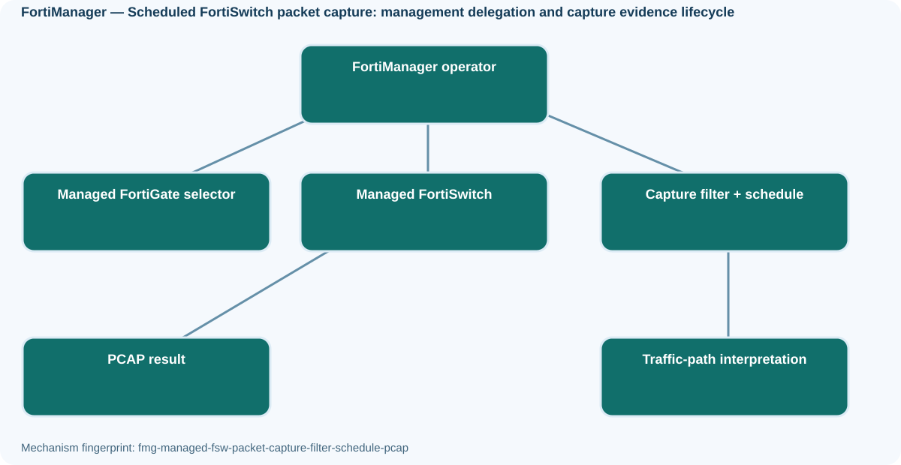
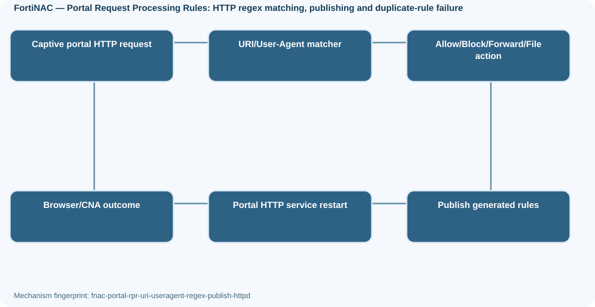
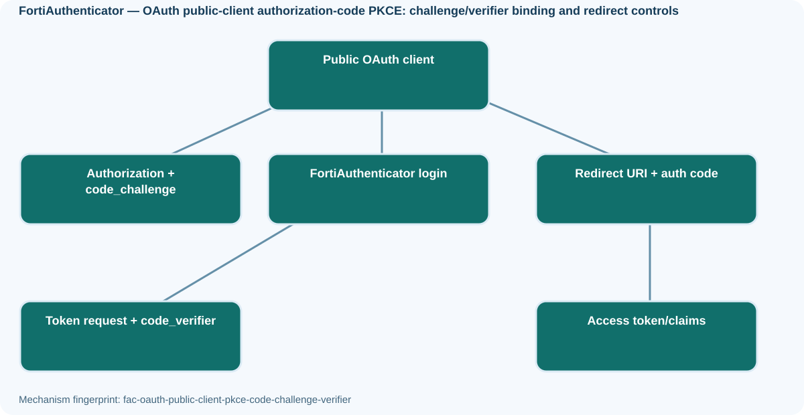
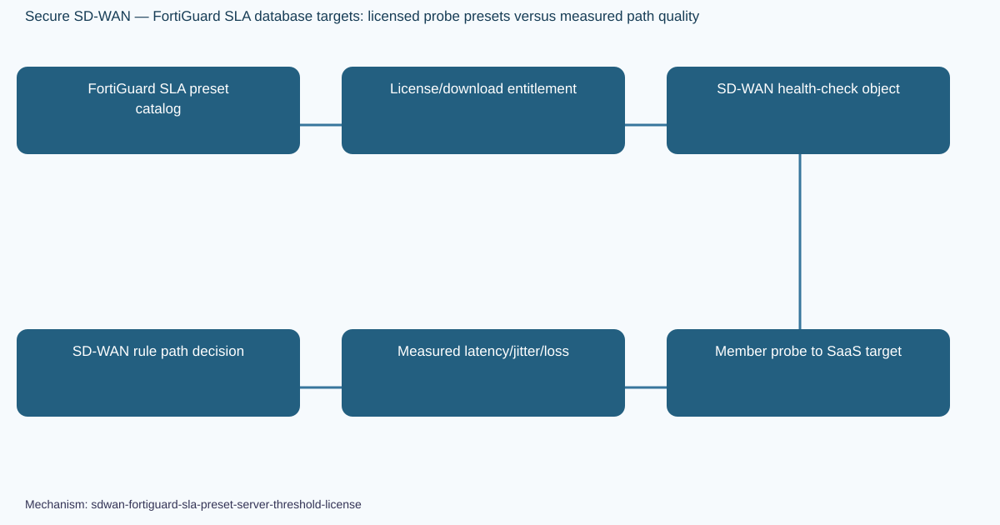

October 25 Fortinet Diagram Manifest
12 mechanism-specific standalone SVG diagrams, each paired with editable draw.io XML source. All 24 assets were committed and verified by repository read-back.
2. FortiManager — Scheduled FortiSwitch packet capture: management delegation and capture evidence lifecycle

Standalone SVG · Editable draw.io
6. FortiNAC — Portal Request Processing Rules: HTTP regex matching, publishing and duplicate-rule failure

Standalone SVG · Editable draw.io
8. FortiAuthenticator — OAuth public-client authorization-code PKCE: challenge/verifier binding and redirect controls

Standalone SVG · Editable draw.io
12. Secure SD-WAN — FortiGuard SLA database targets: licensed probe presets versus measured path quality

Standalone SVG · Editable draw.io